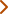

here are some people I've worked with ...


I'm a senior leader with 20+ years of experience driving user-centred design strategy across healthcare, non-profits, and digital agencies ...

Current Health's strategic move into Chronic Care needed a first step. Read how we landed on Diabetes as the first condition and the UX design process we went through.

Rich was an absolutely fantastic manager, and working with him was truly one of the highlights of my career.
He’s an incredibly kind and thoughtful mentor who genuinely invests in the growth and development of his team. Rich consistently created space for me to explore new interests, stretch beyond my comfort zone, and take on meaningful challenges. He was always available to collaborate on project work, offer thoughtful feedback, or even co-create new initiatives to improve team processes.
As a strategic leader, Rich has a remarkable ability to zoom out and see the big picture. He encouraged me to think more holistically and long-term, helping me sharpen not just my tactical skills but also my strategic thinking.
Above all, Rich is simply a wonderful person to work with. Our 1:1s were not just productive but also something I looked forward to during my week - always filled with genuine humour and encouragement.
Rich has a rare combination of strategic vision and operational excellence. He's simultaneously data-driven and insightful enough to read between the lines, crafting compelling product narratives that empower leadership decisions. His process-oriented approach improved our documentation and workflow efficiencies, creating space for our team to deliver exceptional work.
Within our product ecosystem, Rich's comprehensive understanding of both physical and digital product spaces made him undeniably invaluable too. He identified opportunities for design thinking across domains that I wasn't able to see, helping our team bridge critical gaps in our solutions. This all proved to be a huge asset in my learnings as I wanted to grow more in leveraging data, optimizing workflows, and expanding my product knowledge.
Rich was always more than willing to share his knowledge, welcoming my curiosity with open arms.